Queima gorduras de forma acelerada
Acelera o metabolismo, o que significa que o corpo gasta calorias com mais eficiência. Isso não apenas facilita a perda de peso, mas também aumenta os níveis de energia.
FRETE GRÁTIS para todo o Brasil • até 12x sem juros
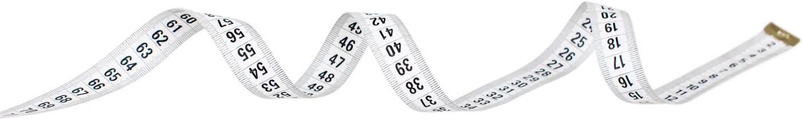
Ativador natural de perda de gordura que ajudou e ainda ajuda centenas de pessoas a eliminar gordura corporal
Dê uma carga de metabolismo acelerado no seu organismo e emagreça de verdade
Um estudo publicado na revista Nature Medicine com mais de 52.000 mulheres e homens, um dos maiores do gênero em humanos, encontrou uma ligação direta entre o tecido adiposo marrom e a saúde metabólica de quem consegue se manter magro.
Quero saber mais!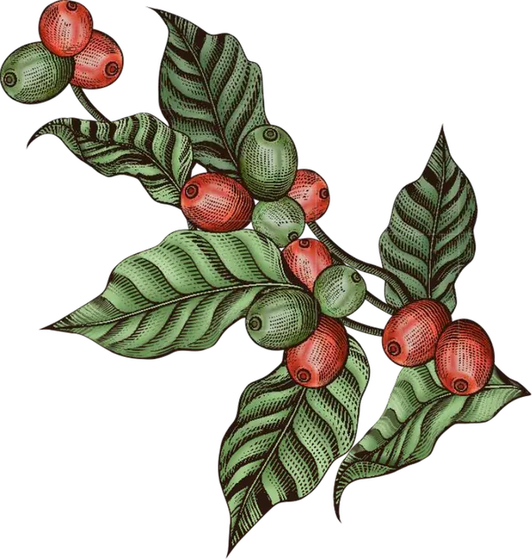
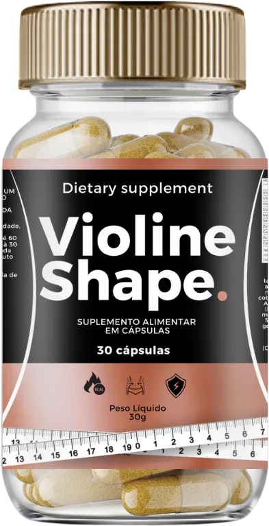
Pesquisadores alemães analisaram exames de milhares de pessoas e encontraram um fator em comum: quem tem baixos níveis de tecido adiposo marrom tende a ter mais dificuldade com o peso e com a saúde metabólica.
E também descobriram que níveis elevados de tecido adiposo marrom são mais comuns em pessoas magras.
O tecido adiposo marrom (TAM), frequentemente chamado de gordura marrom, difere fundamentalmente da gordura convencional. Ao contrário desta última, não atua como um depósito de energia, mas sim como um consumidor ativo de calorias. Sua coloração marrom deriva da alta concentração de mitocôndrias, as quais operam incessantemente, convertendo os estoques de gordura e a ingestão alimentar em energia, num processo contínuo de queima.
desenvolveu o ativador natural de perda de gordura
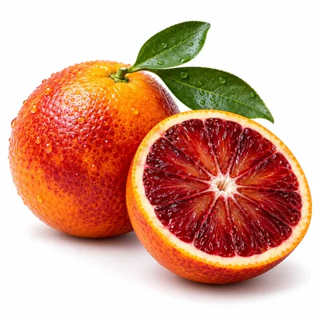
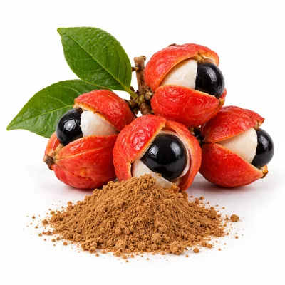
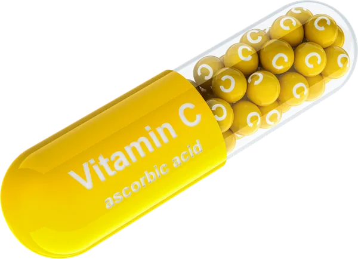
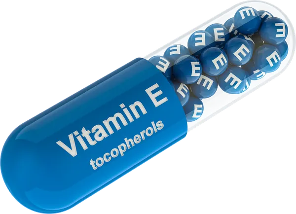
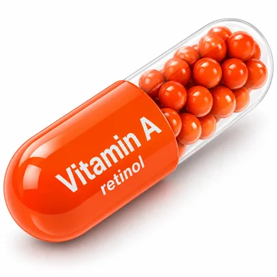
Ingredientes: extrato de laranja moro (Citrus sinensis L. Osbeck), ácido ascórbico (vitamina C), guaraná em pó (Paullinia cupana), cafeína anidra, acetato de DL-alfa-tocoferol (vitamina E), acetato de retinol (vitamina A), picolinato de cromo e antiumectantes carbonato de cálcio, estearato de magnésio e dióxido de silício. Cápsula: água purificada, gelificante gelatina e corante dióxido de titânio. Não contém glúten.
Compra 100% Segura e Satisfação Garantida!
Informação nutricional porção 1,1 g
| Vitamina A | 800 µg | 100% |
| Vitamina E | 15 mg | 100% |
| Vitamina C | 100 mg | 100% |
| Cromo | 250 µg | 714% |
| Antocianinas | 3 mg | — |
| Cafeína | 75 mg | — |
Acelera o metabolismo, o que significa que o corpo gasta calorias com mais eficiência. Isso não apenas facilita a perda de peso, mas também aumenta os níveis de energia.
Você terá mais energia e disposição, sem sentimento de fadiga ou indisposição para finalizar qualquer tarefa do dia a dia.
Promove sensação de saciedade. Ajuda a diminuir os impulsos alimentares e a controlar aquelas ânsias irresistíveis por açúcar.
Vitaminas C e E e as antocianinas da Laranja Moro auxiliam na proteção das células contra os radicais livres.
Comprar o VIOLINE SHAPE é fácil, prático e totalmente seguro.
Recomendamos de 2 à 3 frascos para melhores resultados!
Melhor custo-benefício
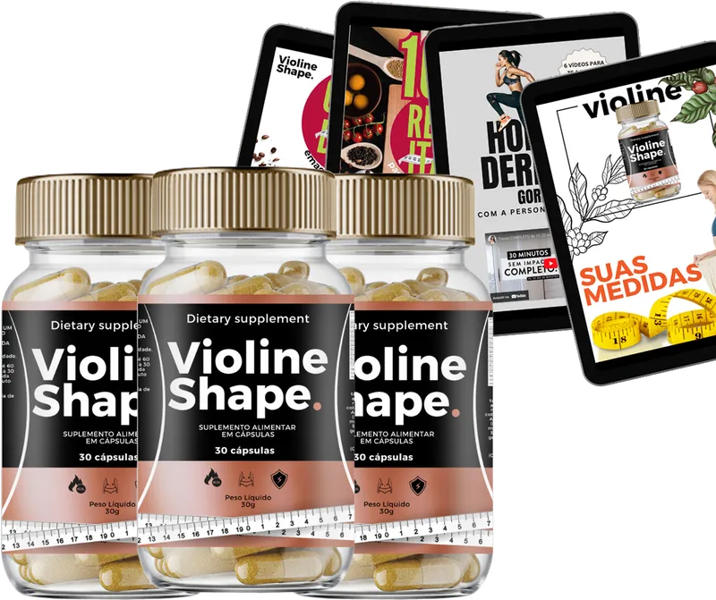
12x 41,42
R$ 497,00 à vista
Compra Segura · Satisfação Garantida · Privacidade Protegida
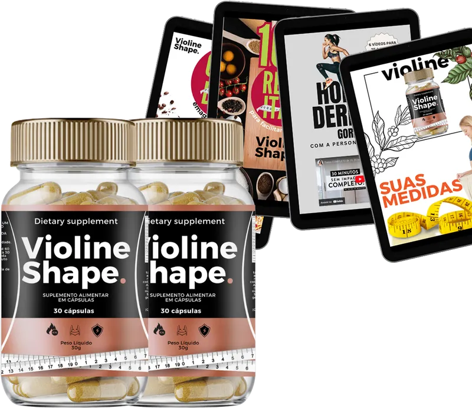
12x 32,25
R$ 387,00 à vista
Compra Segura · Satisfação Garantida · Privacidade Protegida
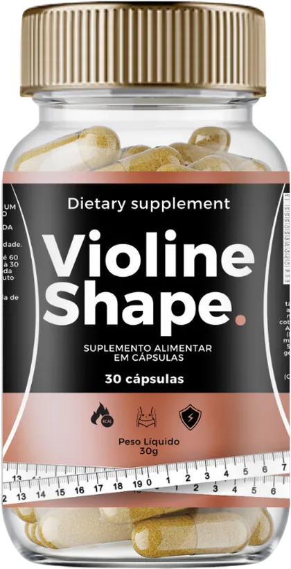
12x 20,58
R$ 247,00 à vista
Compra Segura · Satisfação Garantida · Privacidade Protegida
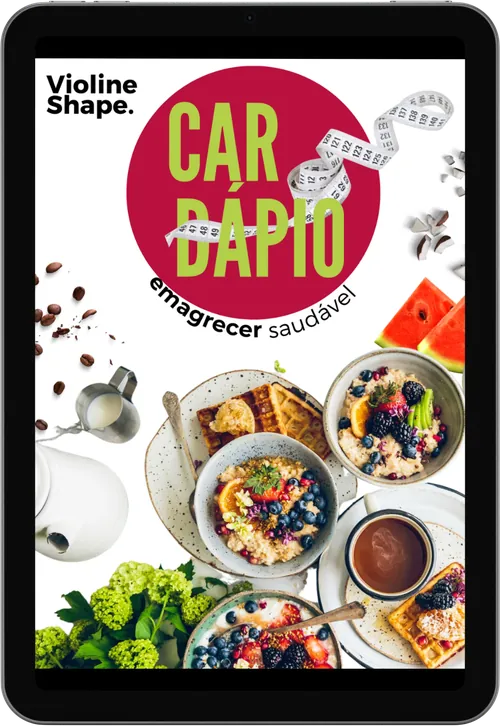
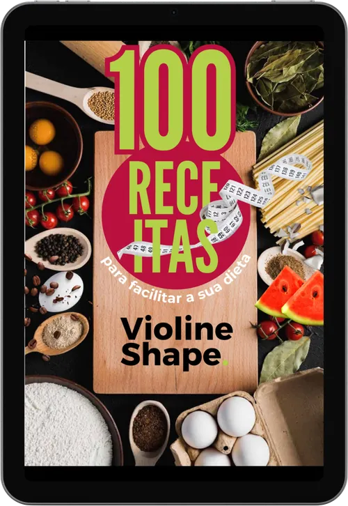
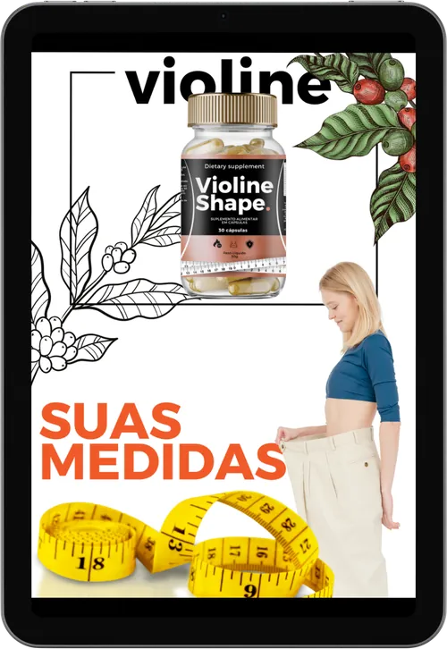
Você irá emagrecer de forma definitiva com todas essas ferramentas COM ACESSO VITALÍCIO!
Aprovado: veja alguns resultados reais


*Os resultados podem variar de pessoa para pessoa e dependem de alimentação e rotina.
Compra 100% Segura e Satisfação Garantida!
Lurdes DolgadoComecei na quinta, bem no dia que comprei, já perdi 3,7 kilos
Edna Silvaamando, não pesei ainda, mas minha saia antes da gravidez está quase servindo.... falta pouco
Talita FontesAs receitas são showwwww.... minha meta é eliminar 12kg, faltam 8, amando....
Elberna Felixestou muito feliz com a minha compra e com o resultado, além do produto, tem as receitas e tudo mais... muito bommm
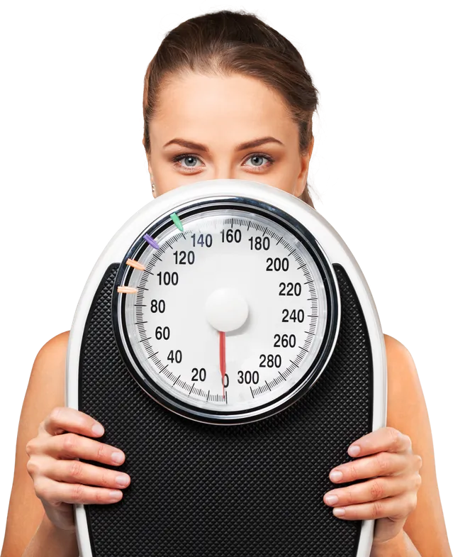
Tome 1 cápsula ao dia, após o café da manhã, até as 10h. Nunca em jejum e nunca substituindo refeições.
⚠️ É de extrema importância se pesar e tirar suas medidas antes de iniciar, pois o processo já começa a partir da primeira cápsula!
Cada frasco tem 30 cápsulas, 1 mês de uso. Recomendamos de 2 a 3 frascos para melhores resultados.
Sim, frete grátis em todos os kits. O prazo aparece no checkout de acordo com seu CEP e você recebe o código de rastreio.
Pix, boleto e cartão de crédito em até 12x sem juros.
Os 4 e-books acompanham os kits de 2 e 3 frascos. O kit de 1 frasco não inclui os e-books.
Por conter cafeína, algumas pessoas podem sentir dor de cabeça, náusea, desconforto no estômago, insônia ou sonolência. Tontura pode ocorrer se a pessoa deixar de se alimentar. Se sentir qualquer desconforto, suspenda o uso e procure orientação médica.
Se você possui dúvidas e quer falar direto com uma de nossas consultoras, disponibilizamos um WhatsApp exclusivo.
Chamar no WhatsApp